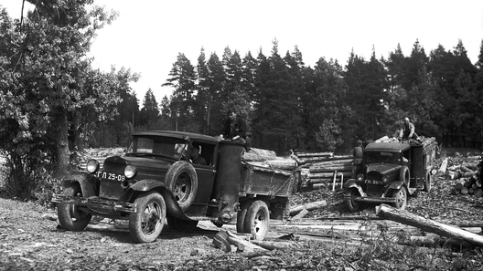
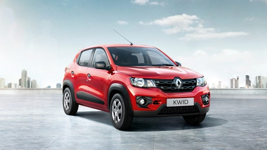

|  |
Хит-парад. Печь-самоходка, или Машины,ездящие на всем, что горит |
| Автомобили на водороде, на электричестве, на метане, на Солнце - сегодня таким транспортом на альтернативных источниках энергии никого не удивишь. А вы еще помните, что когда-то были машины... на дровах? Не спешите снисходительно фыркать: некоторые самоходные "печки" дожили до наших дней! |
|  |